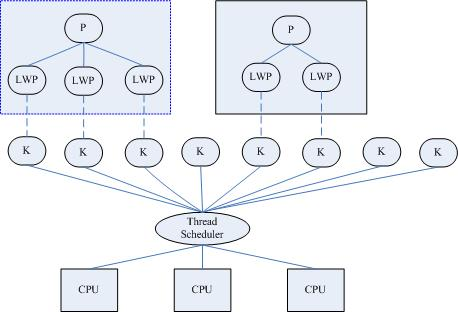

进程与线程
程序一般包括代码段、数据段和堆栈，对具有GUI的程序还包含资源段。进程（process）是应用程序的执行实例，即正在被执行的程序。 每个进程都有自己的虚拟地址空间，并拥有操作系统分配给它的一组资源，包括堆栈、寄存器状态等。线程（thread）是CPU的调度单位，是进程中的一个可执行单元，是一条独立的指令执行路径。线程只有一组CPU指令、一组寄存器和一个堆栈，它本身没有其他任何资源，而是与拥有它的进程共享几乎一切，包括进程的数据、资源和环境变量等。线程的创建、维护和管理给操作系统的负担比进程要轻得多，所以才叫轻量级的进程（lightweight process）。 线程，原意是缝衣线的意思。执行流程像衣服上的线一样，一会儿出现，一会儿消失（一会儿执行，一会儿停止）。或许名字也起源于这种联想吧。
一个进程可以拥有多个线程，而一个线程只能属于一个进程。每个进程至少包含一个线程——主线程，它负责程序的初始化工作，并执行程序的起始指令。随后，主线程可为执行各种不同的任务而分别创建多个子线程。
一个程序的多个运行，可以通过启动该程序的多个实例（即多个进程）来完成，也可以只运行该程序的一个实例（一个进程），而由该进程创建多个线程来做到。显然后者要比前者更高效，更能节约系统的有限资源。这对需要在同一时刻响应成千上万个用户请求的Web服务器程序和网络数据库管理程序等来说是至关重要的。
实现线程主要有三种方式： 使用内核线程实现，使用用户线程实现，使用用户线程家轻量级进程混合实现
使用内核线程实现
内核线程(Kernel Thread, KLT)就是直接由操作系统内核(Kernel)支持的线程。内核线程有内核通过调度器(Scheduler)来完成线程的调度，并映射到各个处理器上。每个内核线程可以看作是内核的分身，内核线程的使用是廉价的，唯一使用的资源就是内核栈和上下文切换时保存寄存器的空间,因此内核线程的切换比较快。支持多线程的内核叫做多线程内核(Multi-Threads kernel )。
轻量级线程(Light Weight Process, LWP)是一种由内核支持的用户线程。它是基于内核线程的高级抽象，因此只有先支持内核线程，才能有LWP。
每一个进程有一个或多个LWPs，每个LWP由一个内核线程支持。每个轻量级线程都由一个内核线程支持，这种模型实际上就是恐龙书上所提到的一对一线程模型。在这种实现的操作系统中，LWP就是用户线程。

由于每个LWP都与一个特定的内核线程关联，因此每个LWP都是一个独立的线程调度单元。即使有一个LWP在系统调用中阻塞，也不会影响整个进程的执行。
但是LWP有它的局限性：由于应用程序线程在用户态运行，而线程管理和调度在内核实现，所以在同一进程中，控制权从一个线程传送到另一个线程时需要用户态-内核态-用户态的模式切换，系统开销较大。
此外，LWP需要内核线程的支持，因此需要消耗一定的内核资源（如内核线程空间），因此一个系统支持轻量级进程的数量是有限的。
使用用户线程实现
从广义上说，一个线程只要不是内核线程，那就是用户线程(User Thread, UT)，因此LWP也是用户线程。从狭义上说，UT是完全建立在用户空间的线程库上，系统内核不能知道线程的存在。 用户线程的建立，同步，销毁和调度完全在用户态中完成，不需要内核的帮助。
用户级线程的优点：线程切换不需要切换到内核态，因此消耗很低操作可以很快，一个进程可以拥有大量的用户线程。
用户级线程的缺点：用户线程的优势在于不需要系统内核的支持，其劣势也在于没有系统内核的支持。多处理器系统中如何把线程映射到起它处理器上的问题解决起来很困难，不能成分利用多处理器的优点。
现在使用用户线程的程序越来越少，Java, Ruby等语言都曾经使用过用户线程实现，最终都放弃了使用这种方式。

使用用户线程家轻量级进程混合实现
线程的实现方式除了依赖内核线程实现和完全由用户实现外，还有一种内核线程和用户线程一起使用的混合方式。这种模型对应着恐龙书中多对多模型,这种模式己存在用户线程，也存在轻量级线程。
用户线程库还是完全建立在用户空间中，因此用户线程的操作还是很廉价，因此可以建立任意多需要的用户线程。操作系统提供了LWP作为用户线程和内核线程之间的桥梁。
LWP还是和前面提到的一样，具有内核线程支持，是内核的调度单元，并且用户线程的系统调用要通过LWP，因此进程中某个用户线程的阻塞不会影响整个进程的执行。 用户线程库将建立的用户线程关联到LWP上，LWP与用户线程的数量不一定的，是M：N关系。当内核调度到某个LWP上时，此时与该LWP关联的用户线程就被执行。
Java线程实现
Java线程在JDK1.2前，由Green Thread的用户线程实现。而在JDK 1.2中，线程模型被替换为基于操作系统原生的线程模型来实现。因此，操作系统支持怎样的线程模型，很大程度上决定了JVM的线程是怎么映射的。如Windows和Linux版本的JDK都是使用1对1的线程模型来实现，即一条java线程就对应一条LWP。
而在Solaris系统中，可以支持1对1，多对多两种线程模型，所以Solaris的JDK支持专有的JVM参数来决定支持哪种线程模型： -XX:+UseLWPSynchronization（默认值），-XX:+UseLWPSynchronization
线程安全
什么是线程安全
“线程安全”是程序员编写代码或检查系统性能时最常挂在嘴边的词语之一。线程安全，在《Java Concurrency In Practice》中的定义是：
当一个对象被多个线程访问，不管运行时环境执行这些线程有什么样的时序安排或者交错，并且在调动该对象的代码都不需要添加任何额外的同步措施，调用该对象的行为都可以获得正确的结果（和单线程中一样的行为），那么这个对象就是线程安全的。
作一个通俗的比喻：一个茅厕一个坑，一个人进去上厕所时就需要把厕所门锁上，以防他人不知情的情况下推门进来。
线程安全程度
线程安全性不是一个非真即假的命题。例如，Java中的Vector的方法都是同步的，并且Vector明确地设计为在多线程环境中工作。但是它的线程安全性是有限制的，即在某些方法之间有状态依赖(类似地，如果在迭代过程中 Vector 被其他线程修改，那么由 Vector.iterator() 返回的 iterator会抛出ConcurrentModifiicationException)。Bloch Goetz在IBM developWorks中的一篇文章中给出了描述五类线程安全性的分类方法：不可变、线程安全、有条件线程安全、线程兼容和线程对立。
不可变(Immutable)
不可变的对象一定是线程安全的，并且永远也不需要额外的线程安全保障措施。 只要一个不可变的对象正确构建出来，其外部可见状态永远也不会改变，永远也不会看到它处于不一致的状态。“不可变“带来的安全性是最简单最纯粹的。 Java 类库中大多数基本数值类如 Integer 、 String 和 BigInteger 都是不可变的。 String对象，我们调用它的substring(),replace(),和contact()方法都不会给它原值带来影响，只会返回一个新构造的字符串对象。 Java中最简单就是把变量声明为final来保障一旦赋值不再改变。线程安全(Thread-safe)
Bloch Goetz给出的定义很严谨，它要求了线程安全的代码必须都具备一个特征：代码本身封装了所有必要的正确性保障手段(如互斥同步等)，令调用者无须关心线程问题，更无须自己实现任何措施来保证多线程的正确调用。但一个类要达到“不管运行环境如何，调用者都无须任何额外的同步措施“，通常要付出很大的代价，而且这点并不容易做到，在大多数场景中，我们都会将这个定义弱化一些。
例如java.util.Vector，老Java程序员都会比较熟悉，一个效率很低的容器类。Vector的方法都是同步的，它的add(),get(),size()方法都被synchronized修饰。
但即使这样，也并不意味这调用Vector时永远不需要同步手段了，如果在迭代过程中 Vector 被其他线程修改，那么由 Vector.iterator() 返回的 iterator会抛出ConcurrentModifiicationException)。
有条件线程安全(Conditionally thread-safe)
有条件线程安全才是我们通常意义上的线程安全。对于对象的单独操作是线程安全的，但是某些操作序列可能需要外部同步。 Java中大部分的线程安全类都属于这种类型。 条件线程安全的最常见的例子是遍历由 Hashtable 或者 Vector 返回的迭代器。由这些类返回的 fail-fast 迭代器假定在迭代器进行遍历的时候底层集合不会有变化。为了保证其他线程不会在遍历的时候改变集合，进行迭代的线程应该确保它是独占性地访问集合以实现遍历的完整性。线程兼容(Thread-compatible)
线程兼容类不是线程安全的，但是可以通过正确使用同步而在并发环境中安全地使用。这可能意味着用一个 synchronized 块包围每一个方法调用，或者创建一个包装器对象，其中每一个方法都是同步的(就像 Collections.synchronizedList() 一样)。
也可能意味着用 synchronized 块包围某些操作序列。为了最大程度地利用线程兼容类，如果所有调用都使用同一个块，那么就不应该要求调用者对该块同步。 这样做会使线程兼容的对象作为变量实例包含在其他线程安全的对象中，从而可以利用其所有者对象的同步。
许多常见的类是线程兼容的，如集合类 ArrayList 和 HashMap 、 java.text.SimpleDateFormat 、或者 JDBC 类 Connection 和 ResultSet 。
线程对立(Thread-hostile)
线程对立类是那些不管是否调用了外部同步都不能在并发使用时安全地呈现的类。线程对立很少见，当类修改静态数据，而静态数据会影响在其他线程中执行的其他类的行为，这时通常会出现线程对立。线程对立类操作还有System.setIn(),System.setOut(), System.runFinalizersOnExit()等。
线程安全的实现方法
了解线程安全之后，我们需要进一步了解如何编写代码来实现线程安全。互斥同步(Mutual Exclusion & Synchronization)
互斥同步是最常见的一种并发正确保障的手段。互斥同步的主要方式有临界区（critical section）、互斥量（mutex）、信号量（semaphore）。同步是指多线程通过特定的手段（如互斥量）来控制线程之间的执行顺序。
互斥是实现同步的一个手段，在多个线程并发访问共享数据时，让共享数据成为临界资源，通过互斥的方法，保证临界资源在同一个时刻只被一条线程使用。互斥是因，同步是果，互斥是方法，同步是目的。
在Java编程模型中，我们称所谓的互斥量为线程锁，它对应一个Java实例对象。守护临界区最常用的手法就是声明synchronized关键字，还有java.util.concurrent包里的重入锁(ReentrantLock)。
ReentrantLock和synchronized增加了一些高级功能，主要以下三项：
－ 支持等待中断。当拥有锁的线程长时间不释放锁时，等待线程可以选择放弃等待，改为处理其它事情。
－ 支持公平锁。ReentrantLock有一个带布尔型参数的构造函数，接受可选的“公平”参数。公平锁使线程按照请求锁的顺序依次获得锁；而不公平锁则允许讨价还价，在这种情况下，线程有时可以比先请求锁的其他线程先得到锁。
－ 支持绑定多条件。ReentrantLock可以通过调用newCondition()方法类来绑定多个Condition对象。而synchronized就不得不而外天际一个锁。
使用ReentrantLock比使用synchronize要注意的地方在：
－ 使用ReentrantLock，你必须手动的在finally块中释放锁。锁的获得和释放是不受JVM控制的，如果造成语意级别的死锁，jstack等工具是无法自己识别出来的。
－ 当 JVM 用 synchronized 管理锁定请求和释放时，JVM 在生成线程转储时能够包括锁定信息。这些对调试非常有价值，因为它们能标识死锁或者其他异常行为的来源。Lock 类只是普通的类，JVM 不知道具体哪个线程拥有 Lock 对象。
JDK6中使用了经过改善的管理synchronized的算法，从而大大弥补了可伸缩性的不足。 因此ReentrantLock与synchronized之间的性能差异，随着CPU、处理器数量、高速缓存大小、JVM等因素的发展而改变，不像网上传的那样性能比ReentrantLock差很多很多。
非阻塞同步(Non-Blocking Synchronization)
互斥同步，也叫阻塞同步(Blocking synchronization)，阻塞同步是一种悲观的并发策略。无论共享数据是否真的会出现竞争，它都需要去进行加锁，用户态核心态转换，维护锁计数器和检查是否有被阻塞的线程需要被唤醒等操作。还有一种同步方式就是非阻塞同步(Non-Blocking synchronization)，非阻塞同步通过基于冲突检测的乐观的并发策略来解决同步问题。 先进行操作，如果没有其它线程争用共享数据，那操作就成功了。如果有共享数据争用,那就产生了冲突，然后就不断重试直到成功为止。
乐观的并发策略需要硬件指令集的支持，因为我们需要操作和冲突检测两个步骤需要具备原子性，因此需要在硬件保证语义上看起来需要多次操作的行为只需要一条处理器指令就能完成。
当前大多数机器都在硬件级实现了这个操作，在Intel等处理器上通过指令CMPXCHG来完成CAS(Compare-and-Swap) 功能。
CAS的含义是：我认为V的值应该为A，如果是，那么将V的值更新为B，否则不修改并告诉我V的值实际是多少。 JDK5后，Java才加入CAS的操作，该操作是由sum.misc.Unsafe类里面的compareAndSwapInt()等几个方法提供的。JVM里也对这些方法做了特殊处理，编译出来的结果直接对应处理器的CAS指令。
CAS（Compare -And -Swap）简单来说就是由CPU比较内存位置上的值是否与当前值expect相同，如果是则将其设置为update，如果不是则返回false。
基于CAS的操作可认为是无阻塞的，并且由于CAS操作时CPU原语。在一般的竞争情况下，使用CAS的性能超过锁的性能（在高度的竞争情况下，即各线程计算部分较少读写共享数据较多，锁的性能会更好一些）
另外一点是要正确的使用CAS的无锁编程(lock-free)方式来实现同步比起有锁编程方式要困难很多。 具体有多困难请参考一个无锁的queue实现ConcurrentLinkedQueue源代码，还有Mozes和Shavit的非阻塞插入算法论文《An Optimistic Approach to Lock-Free FIFO Queues》。
参考文章： http://www.ibm.com/developerworks/cn/java/j-jtp04186/
线程封闭(Thread Confinement)
共享数据需要同步，那么换一个角度来说，不不共享数据就可以避免同步。这种技术叫做线程封闭(Thread Confinement)，它是实现线程安全最简单的方式之一。ThreadLocal
//TODO
设计线程安全的类
Java内存模型与线程规范
JSR-133：Java Memory Model and Thread Specification Reversion//TODO